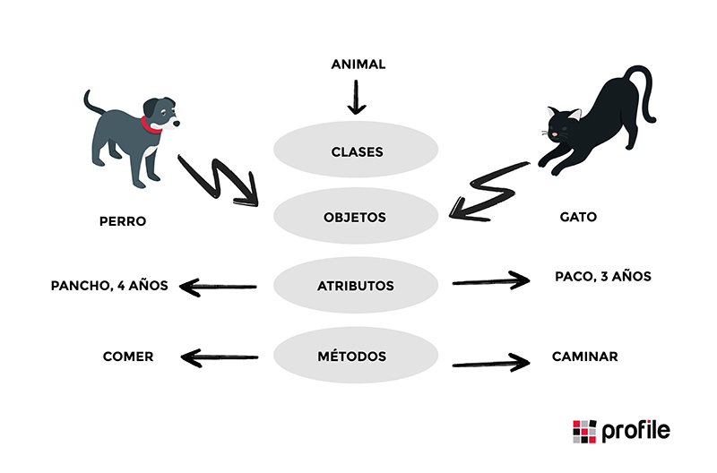

¿Qué es la Programación Orientada a Objetos?
Es un paradigma de programación que utiliza "objetos" para modelar datos y funcionalidades.
La Programación Orientada a Objetos (POO) es una forma de programar donde se organizan los datos y funciones en objetos. Estos objetos se crean a partir de clases, que son como plantillas. La POO se basa en conceptos como clases, objetos, herencia, encapsulamiento y polimorfismo, y permite hacer programas más ordenados, reutilizables y fáciles de mantener.
